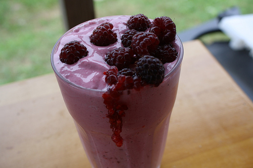

BATIDOS
Batido De Moras

Espectativa
Ingredientes:
- 500 g moras negras
- 700 ml leche
- 65 g hielo picado
- 300 g azúcar morena
Pasos:
- Primero limpiamos bien las moras con agua y les quitamos el rabito verde, con cuidado de no romperlas ni aplastarlas. Reservamos algunas para decorar el batido final.
- Ponemos las moras, la leche y el hielo picado en el vaso de la batidora y lo trituramos todo muy bien, hasta conseguir un batido homogéneo y con algo de espuma. Añadimos azúcar a nuestro gusto.
- Servimos el batido en cuatro vasos individuales y los decoramos con unas moras cada uno. Servimos inmediatamente.


Este es un sitio de recetas rápidas que puedes hacer facilmente para una reunión, sorpresa, algo casual o simplemente para ti.